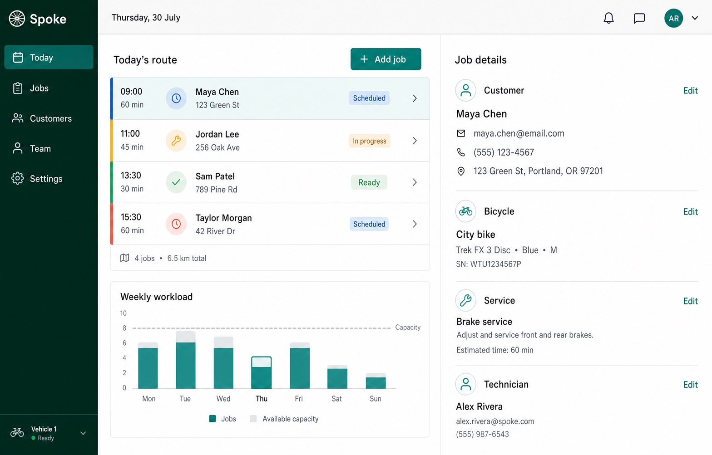

Advisor
Recommends a clear approach, explains briefly, and reduces decision load.

Open source / Alpha
Bring an idea. Get a product studio.
Studio OS turns a filesystem-capable AI agent into a development studio that questions the idea, researches the problem, makes product decisions, designs, builds, verifies, and ships.
One request, one accountable path, project-local decisions.
One studio route
The studio model
You do not need to arrive with a stack, roadmap, or complete specification. Studio OS turns goals and constraints into accepted decisions, working increments, and evidence of what is actually ready.
Bring a rough idea, an existing codebase, a feature, a bug, or a research question. Studio OS detects the kind of work before acting.
Product discovery, research, planning, architecture, interface design, development, and verification stay connected by one project state.
A passing build is not called a finished product. Validation, QA, Product Outcome, and Release make readiness explicit before the studio claims completion.
One project, end to end
A shortened fictional run shows what changes at each stage. The conversation stays practical: request, recommendation, accepted decision, then evidence.
Mobile bicycle repair operations
Idea / Interview
Discovery / Briefing
Planning / Design
Development / QA
Outcome / Release

Where it fits
These approaches can be combined. The meaningful difference is not the number of agents or documents, but how long the system remains accountable for the project.
| Approach | Usually starts with | Primary responsibility | Typical finish signal |
|---|---|---|---|
| One-off prompt | An instruction | Return an answer or artifact | The response is delivered |
| Coding agent | A bounded repository task | Implement and verify code changes | The requested task passes its checks |
| Product workflow framework | An initiative or change | Structure roles and repeatable delivery workflows | The configured workflow completes |
| Studio OS | A product request or current product state | Carry routed studio work and preserve accepted decisions | Product Outcome and Release satisfy separate gates |
Entry paths
Studio OS detects the project mode, then composes the right workflow for the product and the current work item.
A new product moves from problem understanding to verified outcome.
Once the project exists, work routes independently:
Interaction layer
The strategy is inferred from observable behavior and can change as the conversation changes. You never have to configure a mode.
Recommends a clear approach, explains briefly, and reduces decision load.
Makes trade-offs visible and treats challenges as part of the decision.
Implements the accepted change directly and keeps discussion focused.
Delivery standards
Architecture chooses technology for product fit and long-term delivery. Brownfield projects preserve evidence from the existing stack and design system. Quality gates still apply across every platform.
Goals, constraints, current code, operations, and interface evidence.
Architecture, security, accessibility, testing, platform, and stack rules.
Implementation evidence remains separate from product readiness.
Under the hood
The Loader selects one workflow and one active Runtime. Relevant standards and project memory join only when the stage needs them.
The agent reads the core contract, project memory, selected workflow, active Runtime, and only the standards that apply.
Accepted scope, architecture, design-system evidence, status, and quality reports stay in project-local Markdown artifacts.
Passing implementation tests is not enough to call an MVP ready. Validation, QA, Product Outcome, and Release have separate gates.
Install
Install the packaged plugin for Codex or Claude Code, or use the universal Bootstrap with another filesystem-capable agent.
Add the GitHub marketplace, then install Studio OS:
codex plugin marketplace add Aleksei2507/studio-os
codex plugin add studio-os@studio-os
Start a new Codex session, then use Use Studio OS with a product request.
Add the GitHub marketplace, install Studio OS, then reload plugins:
/plugin marketplace add Aleksei2507/studio-os
/plugin install studio-os@studio-os
/reload-plugins
Start with /studio-os:studio-os, then add your product request.
Download the latest release archive, verify its checksum, extract it, and give the agent this entry contract:
Read and follow <studio-os-root>/adapters/universal/BOOTSTRAP.md.
Use Studio OS.
I want to build...
The release archive contains the Runtime core. It does not require npm at runtime.
Questions
The host AI agent performs the work. Studio OS supplies the workflow, stage boundaries, decision contracts, standards, and quality gates that keep that work coherent.
No. Codex and Claude Code have packaged adapters. Other agents with filesystem access can enter through the universal Bootstrap included in each release.
Not by default. Brownfield onboarding records evidence from the current codebase and interface system so later stages can preserve or deliberately revise accepted constraints.
They overlap in structured AI-assisted product delivery. BMAD is a broad agile framework with specialized agents and workflows from planning into implementation. Studio OS emphasizes a development studio operating model: inferred routing, one active Runtime, project-local decisions, and separate gates for code completion, product outcome, and release. It is not presented as a drop-in replacement.
Studio OS is currently alpha software. Its contracts and regressions are actively evolving, so use versioned releases and review project decisions.